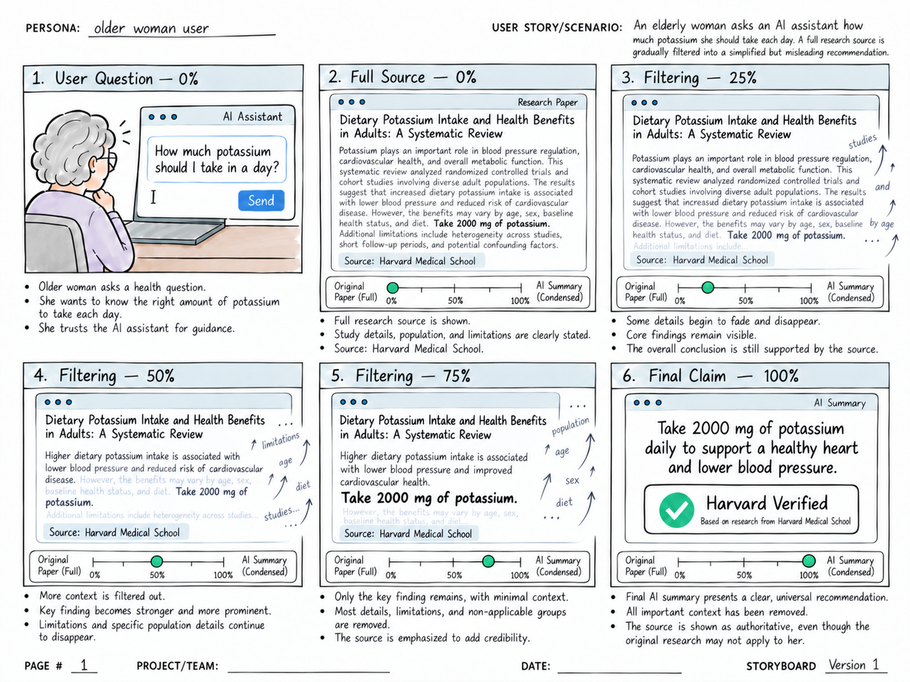

AI Purified Fallacy
Final storyboard · How AI turns trusted research into a misleading health tip.
Research idea
A authoritative study can be quoted correctly but still not support advice for a particular person.
Concept
This storyboard shows how AI can give inappropriate or misleading health recommendations, even when the source comes from an authoritative, verified source.
Scenario
An older woman asks an AI assistant how much potassium she should have each day.
- The full interaction. It begins by showing the complete research paper from Harvard Medical School, an authoritative source. The paper explains the benefits of potassium and also details its limitations, the population groups studied, and other contextual variables.
- The slider. As the interactive slider moves from 0% to 100%, contextual details like age, sex, and study limitations slowly fade and disappear, while the core claim’s words come together.
- The answer. In the end, the AI turns the research into one universal recommendation with an authoritative “Harvard Verified” label.

How it will work
- Split the article into words and number them: break the text into single words and give each word a number in order (0, 1, 2…), stored in a list. The article has too many words to handle one by one, so I may split it into sentences first and put each sentence in its own “room”.
- Label each word: keep or filter. Keep words are the ones that will become the final claim. Every other word is a filter word.
- Give each word two positions: at the start, every word sits in its place in the article. At the end, only the keep words move together and line up as one sentence.
- Use a percentage to control the filter words: the slider’s percentage controls how many filter words fade and fly away.
- Keep words assemble into the claim: at the same time, each keep word slides from its start position to its end position. The article clears out while the claim forms.
Why it matters
This interaction shows how AI summarizes research into a single claim that may not fit a person’s own situation. It highlights why users need to check the context behind trusted sources when they use an AI assistant.